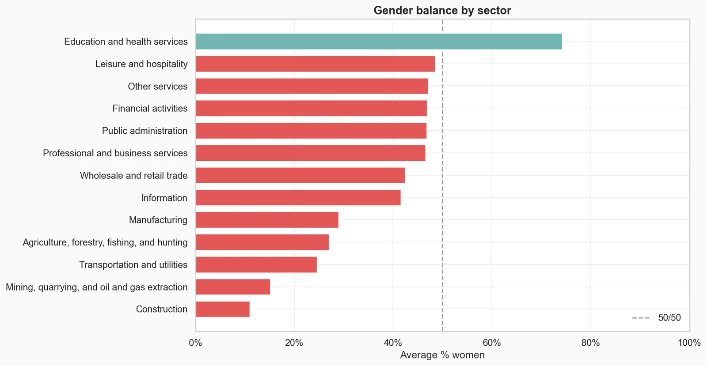
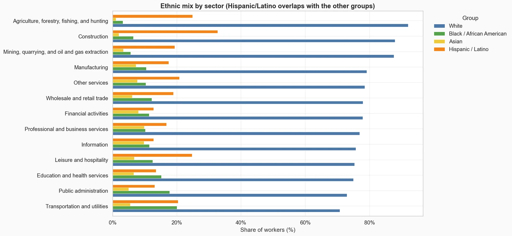
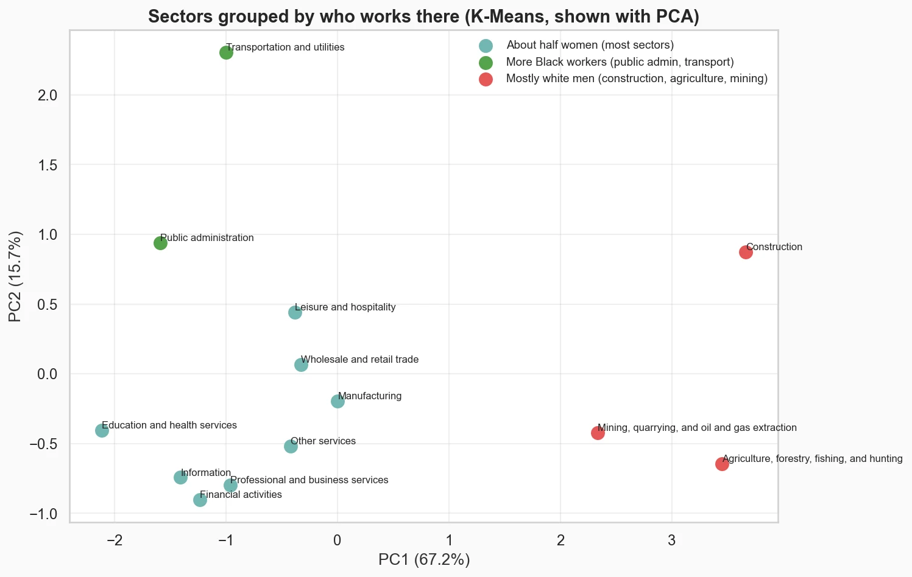
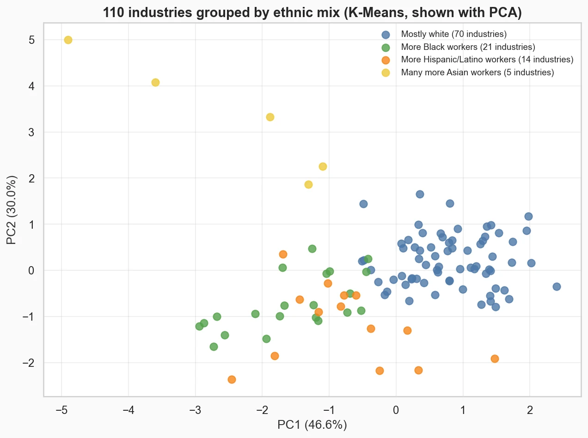
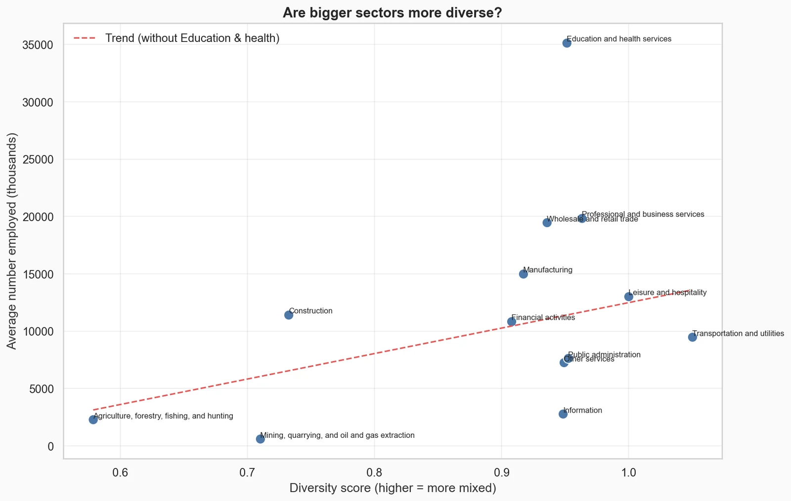

Segmentation · US workforce
Workforce diversity: which US industries are the least diverse?
- Business question
- Which US industries most need diversity hiring?
- Key finding
- Construction, agriculture and mining. They are 88–92% white, and construction is 89% men. White workers are the majority in every sector (71–92%).
- Recommendation
- Start diversity hiring in construction, agriculture and mining, and focus on hiring women in construction, mining and transportation. Track the same numbers every year: mining's Hispanic/Latino share rose 5 points in two years, so they can move.
- Estimated impact
- 89%Of construction workers are men, the most male-dominated sector (mining is 85%).
- Data
- US labour force statistics by sector and industry, 2020–2023
- Coverage
- 13 sectors, 110 industries
- Tools
- Python, pandas, scikit-learn, seaborn
Results





How I did it
- Cleaned the data: removed blank and total rows, fixed percentages typed as whole numbers (87.5 instead of 0.875), and dropped one impossible value.
- Answered six questions with pandas groupby: gender balance, ethnic mix, change from 2021 to 2023, and size against diversity.
- Grouped sectors and industries with K-Means after standardising the columns, picked the number of groups with the elbow method, and drew them with PCA.
- Scored diversity with Shannon entropy: higher means workers are spread more evenly across the groups.
What could make this wrong
- Only four years of data.
- The percentages are survey estimates, so small industries jump around from year to year.
- K-Means always finds groups, even weak ones: the groups describe the data, they don't prove anything.
What I learned
- Clean first: some percentages were typed as 87.5 instead of 0.875, and one Asian share was above 100%.
- Standardise the columns before K-Means, otherwise the biggest numbers decide the groups.
- Check written findings against the output: my first write-up had the industry groups mixed up.
What I'd do next
- Add pay data, to see whether the least diverse industries also pay differently.
- Use more years, to tell real changes from survey noise.
- Look at job level (entry level vs management), not just the industry.